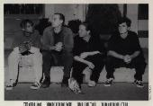

Home Artist links Label link

Boud Deun - Astronomy Made Easy
| Artist: | Boud Deun |
| Title: | Astronomy Made Easy |
| Label: | Cuneiform, Rune 91 |
| Length(s): | 52 minutes |
| Year(s) of release: | 1997 |
| Month of review: | 02/1997 |
Line up
Shawn Persinger - guitar
Matt Eiland - bass
Greg Hiser - violin
Rocky Cancelose - drums
Tracks
| 1) | December 17th | 3.22
|
| 2) | Good King Friday | 2.38
|
| 3) | Spiders | 4.57
|
| 4) | Sleeping | 1.17
|
| 5) | Neither | 2.54
|
| 6) | Copper Ink | 9.51
|
| 7) | Conversations With Elvis | 3.43
|
| 8) | Coal Boxes And Daisy Cutters | 3.35
|
| 9) | Lincoln | 5.23
|
| 10) | Jupiter | 7.42
|
| 11) | The Miller's Tale | 1.18
|
| 12) | The Quince Tree | 5.07
|
All sound samples from Astronomy Made Easy appear here by permission of Cuneiform Records.
Summary
After their first Fiction & Several Days they are back with their first
for Cuneiform.
The music
The first track on this album sound like what Kansas would have sounded
like if they had been an avant garde band instead of the melodic progressive
band that they became. On this album not only echoes of Kansas (mostly
through the rock and violin sound) can be heard but for instance in
Spiders, Red-era King Crimson is definitly audible in the music.
Constrastingly Sleeping comes as close to country as the band would want
to get (or I want to). Again by contrast Neither is a dissonant piece
with a high tempo and lot constrasting melodies involved. A very chaotic
piece.
Copper Ink starts out promising, with some more meaningful melodies and
the music at this point even sounds structured. in the middle this song
seems to end and as they continue with what seems the next track it turns out
it was the same track all along.
For the rest it is more of the same: lots of variation, but also repetitive
in a sense, with change of signatures as fast as they come and little
attention paid to melody.
Most striking song on this album is Jupiter that starts very familiarly with
something I have not been able to identify, but also the continuation is nice
and has a very strange sound in it (probably a bass, but I'm no expert).
In the rest of the song we hear again a dual of electric guitar and
violin taking the lead one after the other and there's even place
for a drumsolo in there.
Conclusion
Country, King Crimson, Kansas and jazzrock-like free meanderings of melody
and rhythm make this album not something for the faint of heart and it is
clear that neo-proggers and in fact everyone who feels music shouldn't
be neurotic should stay clear here. Although I'm often rather fond of this
kind of avant garde music, I can't really be very impressed, by what is offered
here. Maybe, it is not the intention of the musicians, but I have this strange
notion that music leads to something, and that something shouldn't always
be more music, because in the end, the musicians always lose (the CD has
only finite space) and although there can be some exciting moments in there,
a lot of the music is simply to free of form and devoid of structure and
melodically not very appealing. Coupled with the fact that although I do like
violin, but am not very much into country it should be obvious that this CD
doesn't really take my heart away.
If I should characterize the parts of this CD that are most to my liking then
I would take Spiders and for instance parts of Conversations with Ellis,
because there the King Crimson references are most (too?) pronounced.
Additionally I also liked the beginning of Jupiter.
I DO think it is very original, especially the integration of the violin
into the music.
Jur
© Jurriaan Hage